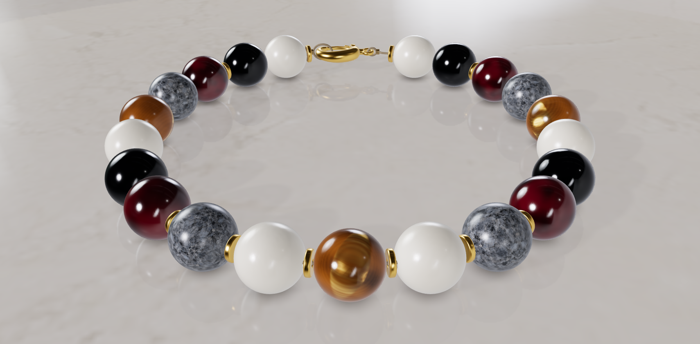
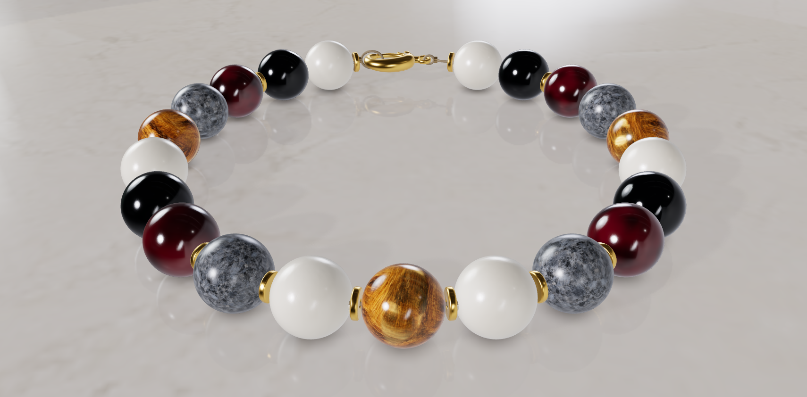
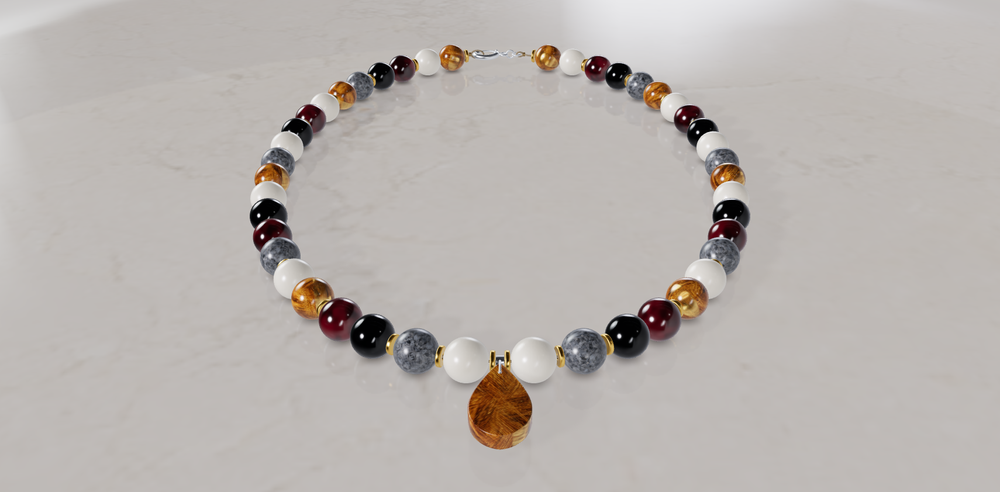
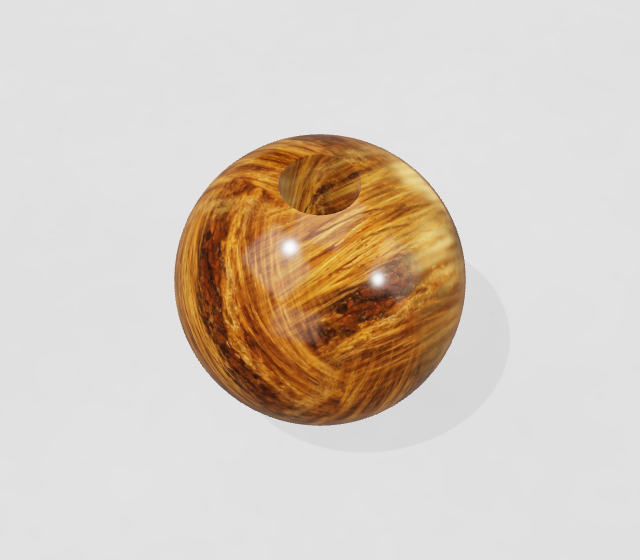
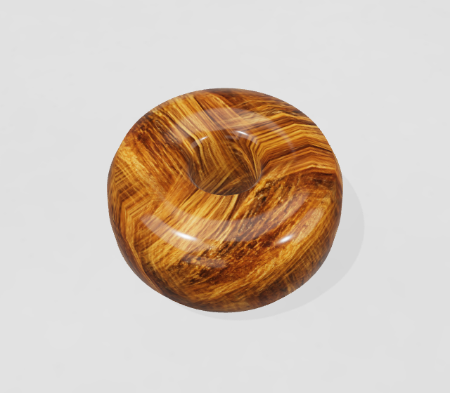
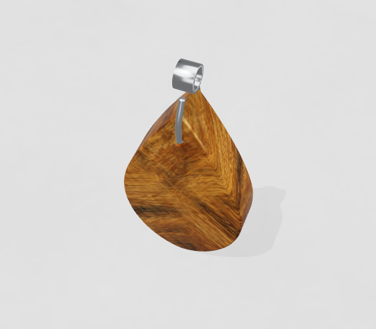
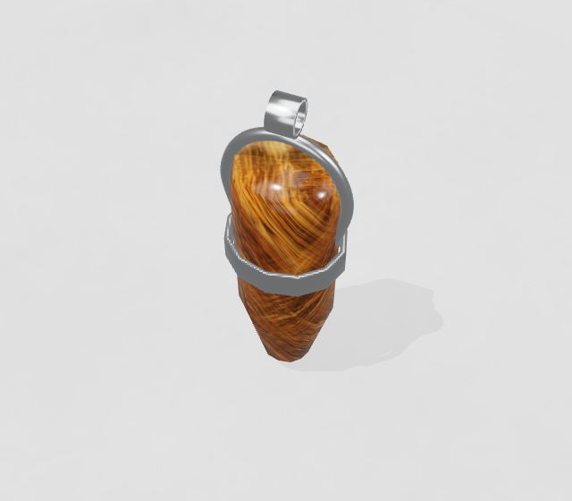

Atölye kayıtları · 01 Kasım 2026
Aynı tasarım.
Yeni taş dokusu.
Bileklik ve kolyedeki değişimi aynı ışıkta, aynı kadrajda gör. Görüntüleri özgün boyutunda açabilir, örnek tasarımları indirip atölyede düzenleyebilirsin.
01 · Bileklik
Küçük taşlarda doku.
Tasarım ve kadraj aynı. Kahverengi kaplan gözü taşlarındaki lifli deseni karşılaştır.

Özgün boyutta aç ↗

Özgün boyutta aç ↗
Görseller kırpılmadı veya düzenlenmedi. Sayfaya sığdırılan görüntülerin özgün dosyaları yukarıdaki bağlantılarda.
02 · Kolye
Doku, uçta da görünür.
Aynı kolyeyi, aynı damla uçla gör. Büyük yüzeydeki liflerin yönü ve yoğunluğu daha belirgin.


Özgün boyutta aç ↗
Büyük uçtaki yoğun ve çapraz desen, inci ve metalin derinliği üzerinde geliştirme sürüyor.
Malzeme örnekleri
Yakından bak.
İp veya seçim işaretleri olmadan alınmış özgün 3D örnekleri.




Bunlar sabit malzeme örnekleri. Atölyede seçilen her taşın birebir desenini veya gerçek stok durumunu göstermez.
Görseller sende kalsın
İndir. İncele. Tasarla.
Özgün görüntüler ve örnek tasarımlar tek pakette. İstersen yalnız bileklik veya kolye dosyasını al, atölyede açıp düzenle.
Görsel ve dosya paketini indir ↓ZIP · 12,1 MBPNG’ler özgün dosyalar. Teknik JSON kayıtları, yerel çalışma bilgileri çıkarılarak paylaşıma hazırlandı.
İndirdiğin tasarım dosyasını atölyede açarak parçaları değiştirebilirsin.
Dosya içeriği ve bu karşılaştırmanın sınırları
Paket; altı özgün önce / yeni doku / geri dönüş görüntüsünü, on temiz malzeme görüntüsünü, yeni ve eski örnek tasarımları ve paylaşıma hazırlanmış teknik kayıtları içerir. Görseller aynı tasarım, ışık ve kadrajla 3D sahneden alınmıştır.
Önceki bağımsız görsel değerlendirme, aynı piksel dosyaları için yeniden kullanıldı; bu paket için yeni bir bağımsız değerlendirme yapılmadı. Taş dokusundaki kazanç son kalite kabulü değildir. Büyük uç, inci ve metal görünümünü geliştirmeye devam ediyoruz.
Görüntüler fiziksel taşın optik ölçümü, gerçek stok veya üretim doğrulaması değildir. Küçük malzeme görselleri sabit örneklerdir. Dosya kimlikleri ve paket özeti · Dosya özetleri